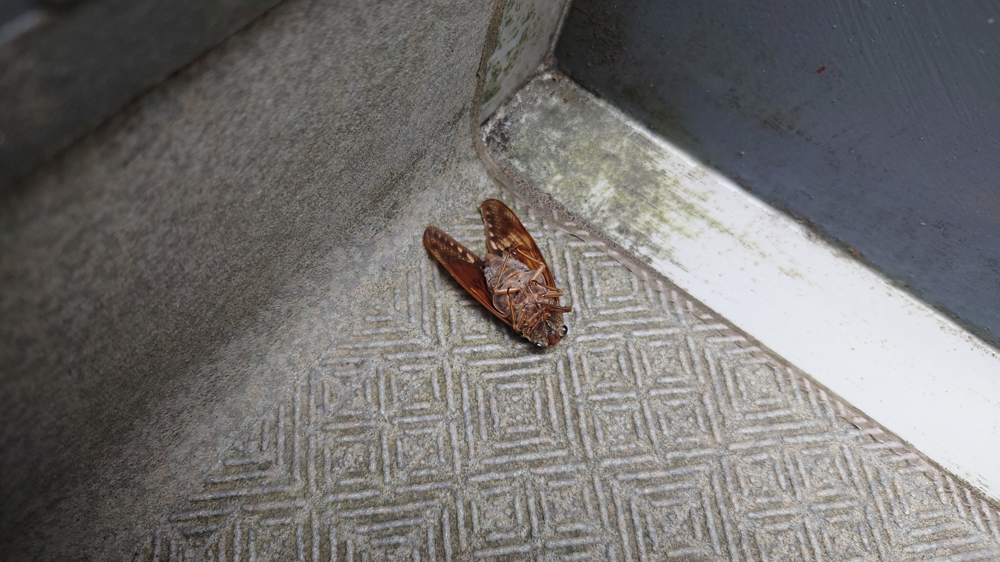
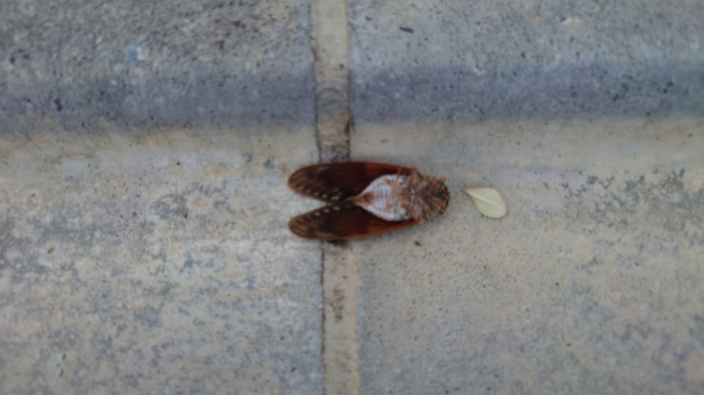
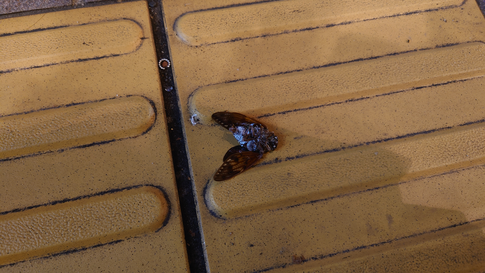
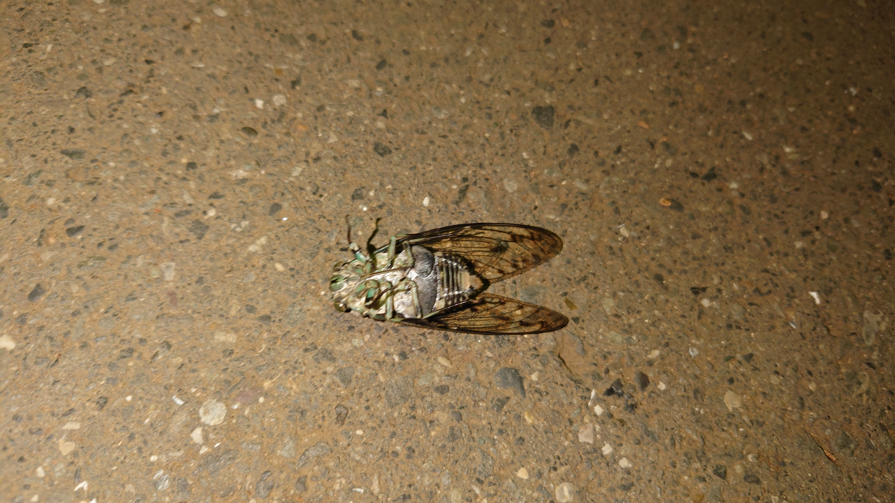
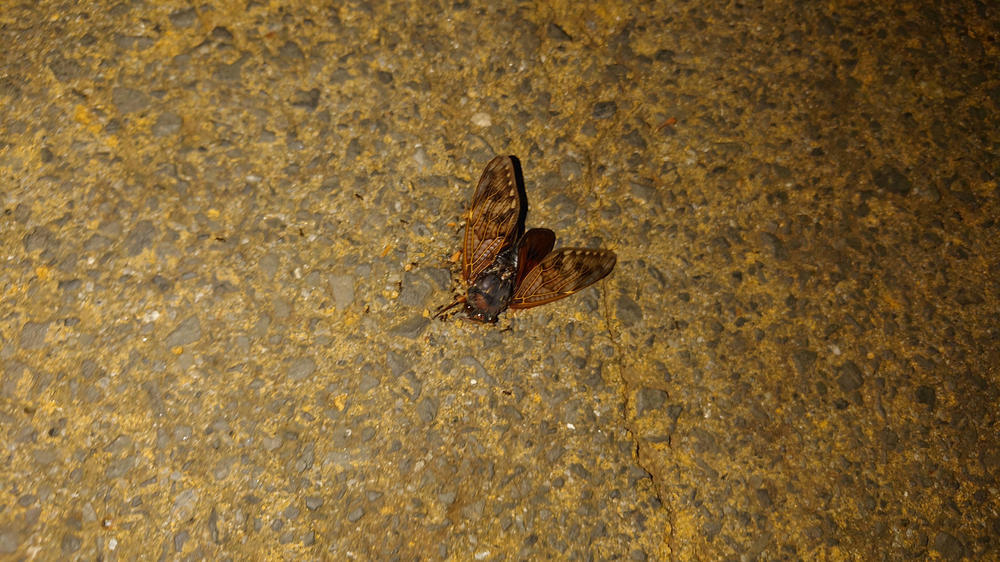

こんにちは、ザクザク食感です。
セミの死骸を見かけたら写真を撮るようにしている








特に意味とかはないけど、もう4年くらい同じことを続けている
普通に厨二病が終わっていないだけかも
最近ぼんやり死にたいと思うことがまた増えてきた
毎日働いて寝るだけの生活が退屈なだけかもしれないし、秋が始まってメンタルが崩れ気味なのかもしれない
そういうメンタルでいると、信号が目の前で赤に変わったこととか、夏が終わってセミが一斉に死に始めることとかにいちいち何か思わなきゃいけなくなってだるい
セミみたいに太く短く生きるのが理想だけど、何もしていないので太くもなければ生きてもいない状態なのでよくない
別に何もしてないわけじゃない 毎日働いてえらいし、やりたいと思ったことはやっている
でもなんとなくすべてに意味を感じられなくて虚しくなってしまう
仕事以外でやることといえばゲームしかないし、何のゲームをやってもしっくりこないので、昔のゲームをやろうと思った
実家に帰省したときにWiiUを持ち帰ってきて、東京のあらゆる中古ショップをめぐって昔やってたゲームとやりたかったゲームを買いそろえた
でもいざやってみるとどれも思っていたほど楽しくなかった もちろんゲームとしては面白いけど、当時の限られた時間の中で何も知らずにで遊ぶゲームとはぜんぜん別物だった
もう打つ手なしか……！？
人生のエンドコンテンツってもしかして仕事なんですか！？
みんなこんな感じなんですか？だからみんな死にたいんですか？
と思って周りを見ても、傍から見ていて幸せそうな人は地獄を抱えていたり、不幸そうな人は幸せに気づけていないだけだったり 不幸を手放せていないだけだったり
どうであれ結局生きていくしかないよね……と思うのを繰り返しています
私はセミになりたい

それでは、さようなら。